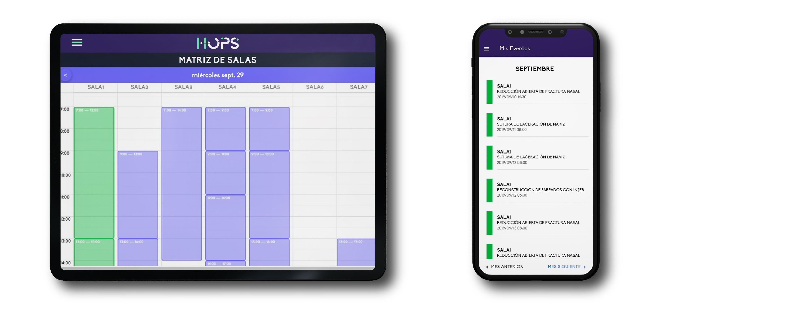

El mundo ha sufrido cambios importantes en las últimas décadas, cambios que han permitido la evolución de la sociedad en diversos aspectos. Uno de los principales catalizadores en esta transformación ha sido la tecnología, que ha agilizado en el último siglo el crecimiento de las industrias, generando también impactó en los procesos cotidianos de las personas.
La transformación digital, una realidad
Hoy en día podemos hablar de la tecnología desde diversos
aspectos;
desde la forma como está ha transformado la cotidianidad de los seres
humanos y de las empresas, hasta convertirse en el principal motor de la
innovación.
Las diferentes industrias a nivel global han venido sufriendo cambios
acelerados en esa búsqueda constante en la entrega de valor a sus
clientes. Las personas y las organizaciones cada día buscan formas más
innovadoras para diferenciarse, lo que ha permitido que se construyan
herramientas, metodologías y en general, soluciones que permitan la
optimización de los procesos corporativos para maximizar la
rentabilidad y así mismo poder brindar recursos en la construcción de
nuevas formas de innovación.
Durante este fenómeno global de transformación digital, han aparecido
ideas y soluciones vanguardistas. Actualmente hablamos de IoT
(internet de las cosas), BigData, IA (Inteligencia Artificial) entre otros,
que han generando un impacto importante en muchas organizaciones
y en la forma como se está replanteando la innovación en muchas
industrias. Particularmente, Inteligencia Artificial ha brindado un
panorama muy grande de soluciones en diversos niveles.
¿Qué es Inteligencia Artificial y cómo es utilizada en salud?
Para entender esto, es necesario conocer qué es
Inteligencia Artificial:
Básicamente es el campo científico de la informática que se centra en
la creación de programas y mecanismos que pueden mostrar
comportamientos considerados inteligentes, basado en el “aprendizaje”
de la recurrencia de situaciones en algún campo. Esto se da a entender
como la capacidad que puede llegar a tener una máquina para “pensar”
y así tomar decisiones.
En nuestros días es casi imposible encontrar algún país en desarrollo
con un sistema de salud sin tecnología. En la última década se ha vuelto
una necesidad no sólo para optimizar los procesos internos sino para
mejorar la calidad de vida de muchos pacientes.
Al hablar de TS (tecnologías de salud) no hacemos referencia sólo a
instrumentos novedosos para realizar cirugías complejas o en la
posibilidad de realizar exámenes por fuera de un laboratorio y que
ahora los pacientes hacen con mucha facilidad desde la comodidad de
su casa, sino que también es importante hablar sobre cómo la
inteligencia artificial es ahora el mayor aliado a la hora de tomar
decisiones en clínicas, hospitales e IPS y además cómo ha
evolucionado al punto de evitarnos tareas como la revisión de datos
manual o la realización de informes para verificar los resultados de una
tarea simplificándolas a la creación de algoritmos que se encargan de
decirnos cuándo y cómo reaccionar ante un evento.
Opciones en el mercado Colombiano
En el sector salud, existen numerosas plataformas y software que
mejoran la toma de decisiones y sirven de apoyo en diversos procesos
que tradicionalmente han sido manuales y complejos.
Hops LATAM es una startup DE COLOMBIA que utiliza Inteligencia
Artificial para ofrecer resultados clínicos, financieros y operativos. Sus
soluciones en la nube conectan personal, salas, camas y datos que
permiten administrar procesos médicos de gestión para llevar las
clínicas, hospitales e IPS a otro nivel y obtener, mayor rentabilidad,
tiempos de rotación óptimos, agendamiento eficiente, interconectividad, información en tiempo
real y datos más precisos.
A través de este software de gestión hospitalaria es posible el manejo de las camas hospitalarias, controlar la ocupación de las mismas y tener información importante del paciente en tiempo real como su sintomatología y la trazabilidad completa de todos los procedimientos y tratamientos médicos realizados en él, de igual manera se puede obtener información sobre la rotación en camas de hospitalización y/o UCI, obteniendo datos para mitigar riesgos, evitar errores y tomar decisiones de manera asertiva, también facilita y optimiza el agendamiento de cirugía programada, teniendo mayor control de todos los datos relacionados con el proceso, notificando a todos los actores del mismo y evitando cancelaciones y retrasos en las cirugías, lo cual se verá reflejado en una mayor rentabilidad.
Análisis de datos, el mejor aliado para tomar decisiones asertivas
Inteligencia Artificial es un gran aliado en el apoyo de análisis de
datos. Hoy en día, las instituciones clínicas cuentan con muchos datos
que han sido almacenados como consecuencia de los diferentes casos
clínicos que se presentan con sus pacientes. Inteligencia artificial,
permite comprender y procesar toda la información para encontrar
tratamientos adecuados, basado en la enfermedad, antecedentes,
condiciones, entre otros, ayudando a encontrar el camino más óptimo
en el tratamiento de la dolencia, y el proceso adecuado para su
recuperación.
Así como los casos evaluados en este artículo, existen diversos usos que
apoyan la gestión corporativa de las empresas con esta tecnología.
Visite Hops LATAM para conocer más información sobre cómo
optimizar los procesos de su empresa y aumentar la precisión en la
toma de decisiones de su clínica, y solicite una prueba gratuita.
Hops LATAM el mejor partner gerencial, para la mejor decisión gerencial.
María Paula Arango Ramírez
Gerente comercial Hops Salud S.A.S
https://www.linkedin.com/company/hopslatam
https://www.linkedin.com/in/mariap-arango